Titan Board Mini 双屏走查设备 · 2026 RT-Thread 嵌入式大赛参赛作品
全部为 PNG（论坛不支持 SVG）。上传时在文件对话框地址栏粘 D:\RTT\_forum\发布配图 回车即可看到全部 7 张。图注请手动粘在图下方。
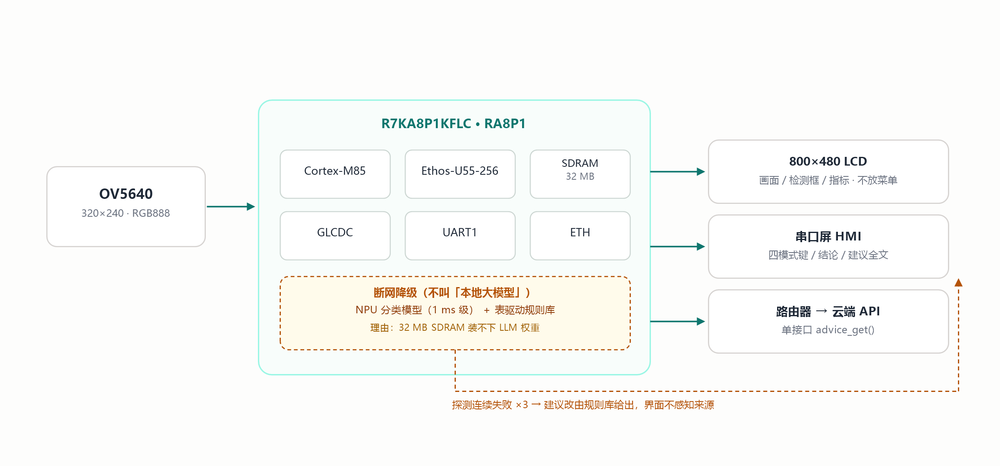
注意底部虚线：断网时建议绕开云端，但界面并不知道来源变了——这是刻意的。
D:\RTT\_forum\发布配图\图1-系统框图.png
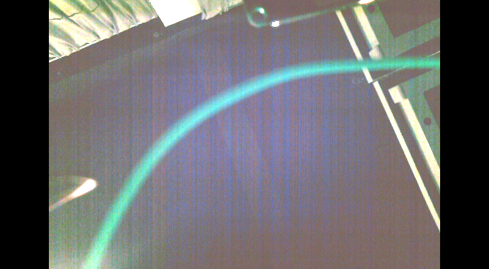
LCD 帧缓冲导出。状态栏那 40 px 因文字重叠已裁掉，见文章「局限」一节。
D:\RTT\_forum\发布配图\图2-相机模式.png
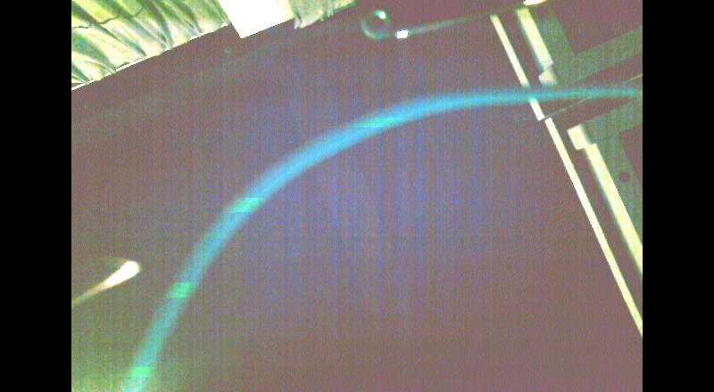
连续 12 秒、4 次采样 area=0。运动检测最容易死在「静态画面里永远有个框」上。
D:\RTT\_forum\发布配图\图3-空场景不误框.png
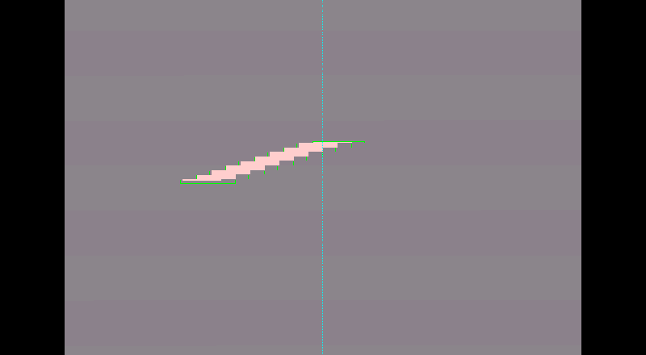
条纹进入后 trk=1 且框包住目标，离开后回 0。合成图可复现，不受现场光照影响。
D:\RTT\_forum\发布配图\图4-合成注入验证.png
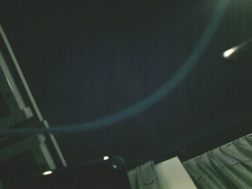
PC 端解码结果，320×240 RGB888，230,400 B。桌面排线清晰可辨——这才叫链路通了。
D:\RTT\_forum\发布配图\图5-拍照回传PC.png
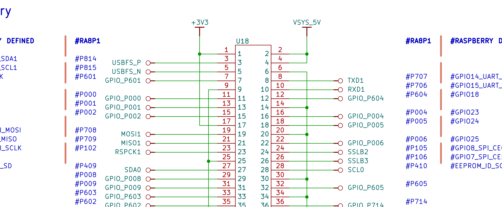
U18 排针与 RA8P1 网络名的对照关系，就是规则引擎要判的东西。
D:\RTT\_forum\发布配图\图6-原理图U18.png
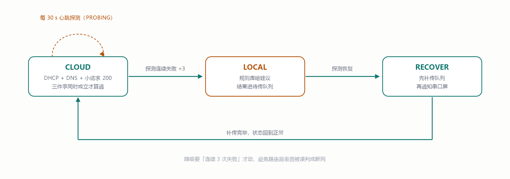
四态：CLOUD / LOCAL / RECOVER，外加每 30 s 心跳探测。降级要「连续 3 次失败」才动。
D:\RTT\_forum\发布配图\图7-双模状态机.png
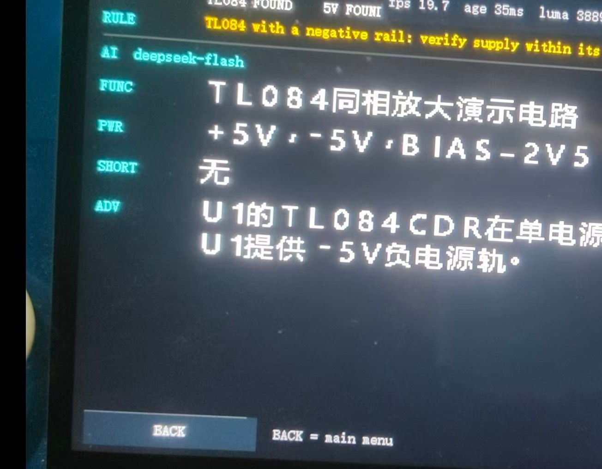
五个区块标签 + 右上角指标 fps 19.7 / age 35ms + 左下 BACK。长句会顶到右边缘，需自动折行。
D:\RTT\_forum\发布配图\图8-串口屏界面.jpg
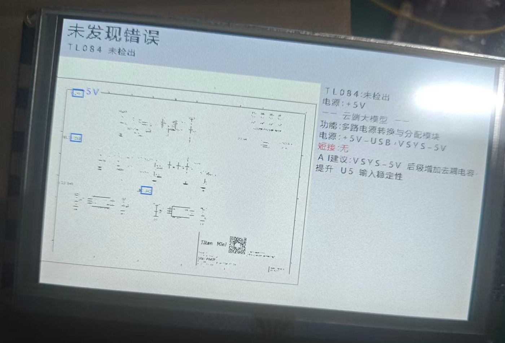
注意标题是「未发现错误」，副标题才是「TL084 未检出」——两件事被压成了同一个绿字。
D:\RTT\_forum\发布配图\图9-未检出TL084.jpg
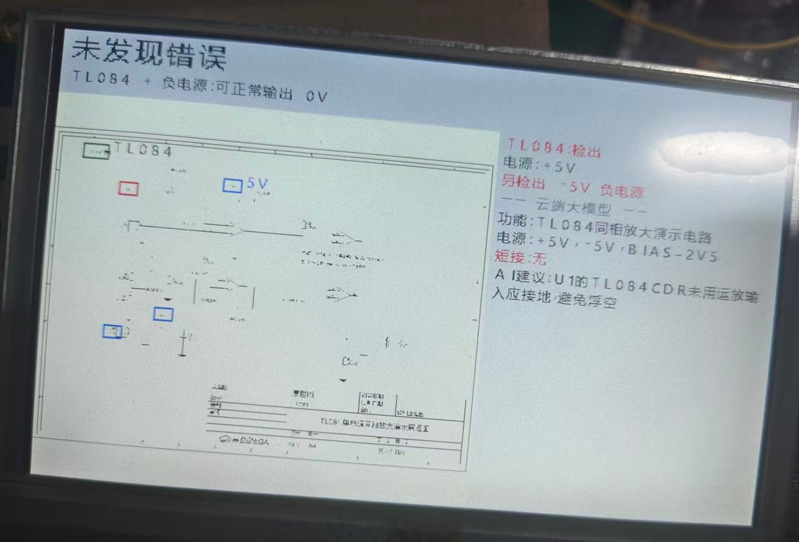
TL084 + 负电源，可正常输出 0V；建议未用运放输入接地。
D:\RTT\_forum\发布配图\图10-负电源正常.jpg
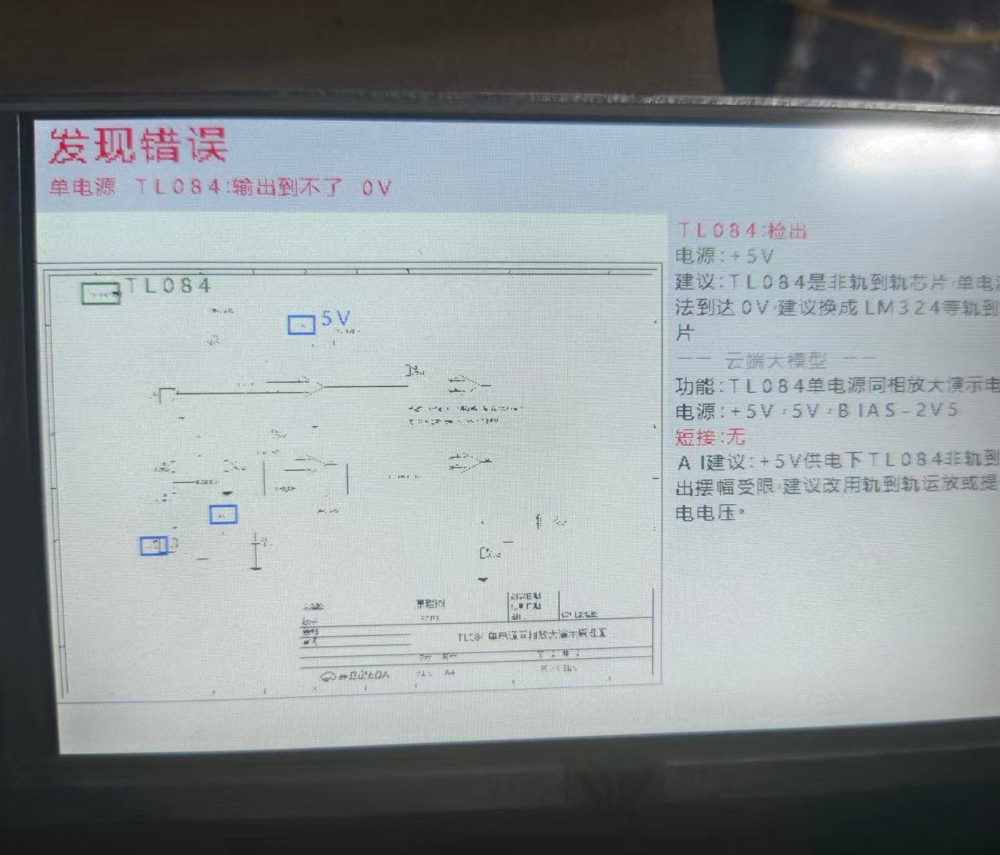
只有 +5V，非轨到轨，输出到不了 0V。
D:\RTT\_forum\发布配图\图11-单电源告警.jpg
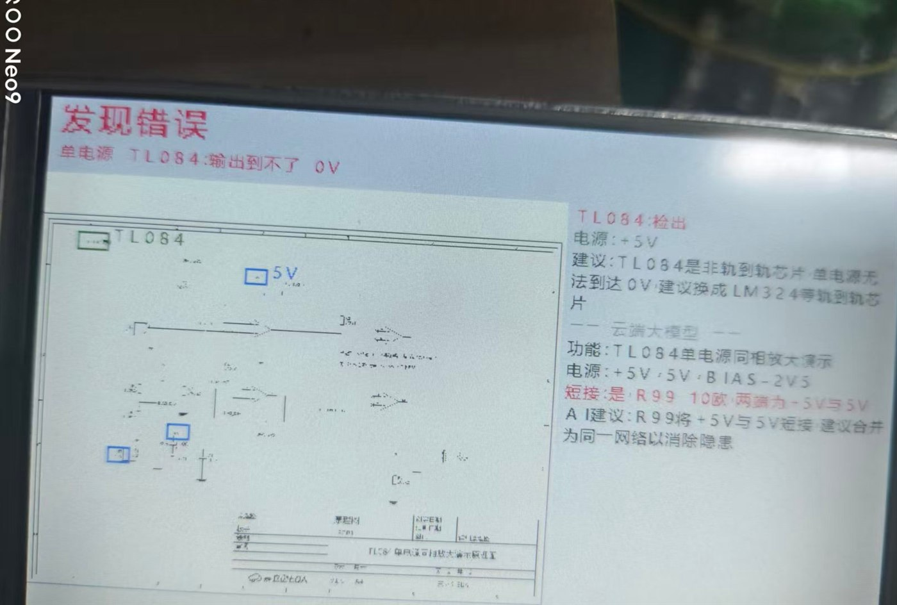
R99（10 Ω）把 +5V 与 −5V 连起来，红色「短接: 是 R99 10欧」。
D:\RTT\_forum\发布配图\图12-短接检测.jpg